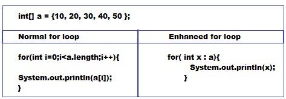

FOR-EACH
- It has been introduced in java 1.5 version .
- It is specially designed loop to retrieve elements of arrays and collections .
- For-each loop is most convenient loop to retrieve the elements of arrays and collections .
- But its limitation is only applicable for arrays and collections .
- By using for-each loop we can not print array elements in reverse order .
